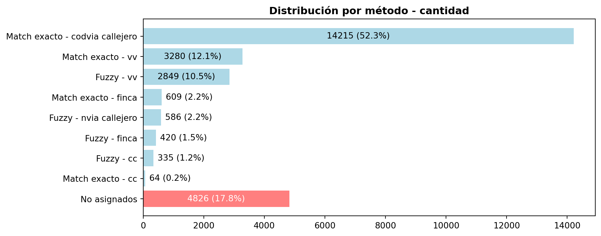

Proyecto: Tenerife Padrón 2.0 (Cabildo Tenerife) - Padrón Online (INE)
Mediante la Orden TER/1235/2023 (E2025001009), el Cabildo de Tenerife encarga a Cartográfica de Canarias S.A. (GRAFCAN) la ejecución de tareas de análisis y depuración del padrón de municipios de menos de 20.000 habitantes, en el marco del proyecto TenerifePadrón 2.0, encuadrado a su vez en la iniciativa Padrón Online del INE.
1 Resumen
Este documento describe la metodología empleada para la resolución de la Tarea A1 (‘Hogares sin CIV’) , que consiste en la asignación de Código de Identificación de Vivienda (CIV) para aquellos hogares que carecen del mismo. La aproximación se centra en la búsqueda de emparejamientos mediante dirección para los ficheros proporcionados por el INE, así como la comparación contra otras fuentes de datos. Tras un emparejamiento exitoso, se realiza la asignación de CIV para el hogar de acuerdo con el procedimiento dispuesto en la Guía Técnica de Subvenciones.
Dada la inexistencia de un mecanismo de emparejamiento unívoco, la variedad en los formatos de nomenclatura y la incompletitud de las descripciones hasta nivel de inmueble, se ha optado por emplear distintos métodos de emparejamiento basados en coincidencia exacta y coincidencia difusa (aplicando primero los más conservadores y optimizando los menos restrictivos para minimizar los falsos positivos), para las direcciones hasta nivel de parcela.
Los resultados reflejan un 82,25% de asignación a nivel global tras la comparación con todas las fuentes de datos (asumiendo cierto margen de error para los registros procedentes de coincidencia difusa, si bien se ha trabajado en minimizarlo). Para aquellos registros que forman parte del residuo (17,75%), con correspondiente nueva alta de CIV, se realizó una revisión exhaustiva de los motivos de no asignación, entre los que destacan la falta de descripciones completas en el fichero origen o las fuentes comparadas.
El desarrollo y resultados de los trabajos se plasman en el presente informe, así como en el atlas que muestra la distribución espacial de los hogares y estadísticos más relevantes para cada municipio.
1.1 Información de partida y análisis inicial
La información proporcionada por el INE es la siguiente:
Registros del fichero de hogares sin CIV (HSppmmml.023).
Fichero completo de Viviendas del municipio (VVppmmml.023).
Inicialmente, con el fin de recuperar la referencia catastral a 20 dígitos (RC20) desde el fichero de viviendas, se buscó emparejar la dirección hasta nivel de inmueble. Sin embargo, debido a la incompletitud de los campos de dirección y la falta de información suficiente en muchos registros, el nivel de emparejamiento conseguido fue muy bajo.
Por este motivo, se descartó esta vía y se optó por realizar el emparejamiento hasta nivel de portal, lo que garantiza una mayor cobertura de los hogares aunque con menor detalle. De este modo, la asignación de CIV se realizó a partir de la referencia catastral a 14 dígitos (RC14), lo que implica la incapacidad de asociar la figura del hogar al inmueble.
1.2 Fuentes de datos complementarias
Si bien la búsqueda se realizó primero contra el fichero de viviendas como fuente preferente para la asignación de CIV, dado que esta solo recupera alrededor del 27% de registros, se buscaron las direcciones de los hogares del fichero HS contra las siguientes fuentes complementarias:
- Catastro: ficheros CAT (alfanumérico) y cartografía vectorial (gráfico) con información de fincas, unidades constructivas e inmuebles urbanos y rústicos.
- Callejero del SITCAN (Sistema de Información Territorial de Canarias): gestionado y mantenido por GRAFCAN, constituye la base oficial de referencia para la red viaria de Canarias.
- CartoCiudad: conjunto de datos con información vectorial (portales y manzanas) y alfanumérica de red viaria urbana e interurbana de ámbito nacional.
2 Flujo metodológico
La asignación de CIV a cada hogar se desarrolla en una secuencia de etapas, resumidas a continuación para proporcionar una visión global del proceso:
Preparación del entorno:
Importación de librerías para manejo de datos (
pandas,geopandas,sqlalchemy), geoprocesamiento (shapely), coincidencia difusa (rapidfuzz,sklearn) y conexión a PostgreSQL/PostGIS.Definición de diccionarios de normalización: equivalencias oficiales para desabreviación, casos de abreviación detectados manualmente, equivalencias de nombres de calles detectadas manualmente, casos especiales donde se debe incluir información de bloque/portal.
Normalización: para mejorar la capacidad de emparejamiento se aplican una serie de funciones de preprocesamiento (conversión a mayúsculas, eliminación de acentos y carácteres especiales, separación de sufijos y prefijos, etc). Dicho proceso se aplica tanto al registro procedente del fichero HS como al de la fuente contra la que se compara.
Carga de datos: conexión a la base de datos para obtener los ficheros HS y las fuentes a comparar (viviendas, catastro, callejero SITCAN y cartociudad).
Emparejamiento:
Primero se ha aplicado el método más conservador (coincidencia exacta) y luego aquellos menos restrictivos (coincidencia difusa o fuzzy matching). Este proceso se realiza de forma iterativa cruzando las descripciones contra las fuentes de referencia, repitiendo un esquema similar en cascada. Así pues, primero se intenta completar con VV, y para aquellos registros pendientes de asignación se cruza contra catastro, callejero SITCAN y finalmente CartoCiudad.
Match exacto: se busca coincidencia directa entre la dirección normalizada de HS y la fuente. Si coincide se asigna la RC14, las coordenadas, y método-fuente de emparejamiento.
Fuzzy match: se busca coincidencia de similitud textual con RapidFuzz + TF-IDF + nearest neighbors. Se valida el match por nivel de similitud (umbral de score) y la premisa de coincidencia exacta de código de municipio y portal entre los registros. Si cumple los criterios se asigna RC14, coordenadas y método-fuente de emparejamiento.
Filtros y umbralesAunque el criterio principal de validación del emparejamiento por cadenas ha sido el score de
rapidfuzz, previamente se aplicó un filtro de preselección basado en Nearest Neighbors sobre vectores TF-IDF. Este filtro inicial permite identificar, para cada hogar, la dirección candidata más próxima en el espacio de n-gramas y descartar coincidencias con baja similitud, reduciendo así el riesgo de falsos positivos en la comparación final.El umbral de similitud para aceptar emparejamientos varía en cada proceso, y se asigna tras una calibración manual orientada a equilibrar recuperación y reducción de falsos positivos. En general, se sitúa entre el 70 % y el 80 %.
Actualización y exportación: se actualiza el fichero HS con las nuevas asignaciones y campos completos. Se exportan resultados a archivos excel para revisión manual.
Métricas de evaluación: tras cada proceso se reportan el total de hogares de entrada, los asignados en esa fase, el porcentaje de coincidencia exacta o difusa y la asignación acumulada (cobertura total).
Asignación de CIV:
Dado que el detalle al que se resuelve el emparejamiento es a nivel de parcela (y no de inmueble por las motivos expuestos anteriormente), se ha recuperado para cada emparejamiento la RC14:
Fichero de viviendas: recuperación directa desde el campo ‘CIV’ (primeros 14 dígitos).
Fuente catastro: recuperación directa desde el campo ‘id_parcela_catastral’.
Generación de puntosTras unir la cartografía vectorial con el fichero alfanumérico CAT, se genera un punto dentro de cada parcela que queda contenido en su superficie. No se utiliza el centroide, ya que en parcelas irregulares o con huecos podría situarse fuera de la geometría, por lo que se calcula un punto ajustado garantizando su ubicación interna.
Fuentes callejero y cartociudad: dado que el emparejamiento está asociado a un punto de la capa de portales, se recupera la RC14 por la vía espacial mediante cruce con la geometría vectorial de las parcelas catastrales.
Una vez recuperada la RC14 para aquellos registros con emparejamiento exitoso, se aplica el proceso de generación del CIV a cada hogar de acuerdo con las directrices recogidas en la Guía Técnica de Subvenciones.
Ficheros de salida:
Tras la modificación del fichero HS con los nuevos emparejamientos y la generación de altas de viviendas para aquellos registros sin emparejamiento exitoso, se generan los siguientes archivos de salida de acuerdo con la estructura de datos establecida:
HSppmmmA.023: registros del fichero de hogares con CIV cumplimentado.
VAppmmmA.023: registros del fichero de alta de viviendas con CIV nuevo.
2.1 Preparación del entorno
Diccionario de abreviaciones:
Code
SIGLAS_VIA = {
'AL': 'ALAMEDA', 'AD': 'ALDEA', 'AP': 'APARTAMENTOS', 'AY': 'ARROYO', 'AV': 'AVENIDA',
'BJ': 'BAJADA', 'BR': 'BARRANCO', 'BO': 'BARRIO', 'BL': 'BLOQUE', 'CL': 'CALLE',
'CJ': 'CALLEJA', 'CM': 'CAMINO', 'CR': 'CARRERA', 'CS': 'CASERIO', 'CH': 'CHALET',
'CO': 'COLONIA', 'CN': 'COSTANILLA', 'CT': 'CARRETERA', 'CU': 'CUESTA', 'ED': 'EDIFICIO',
'EL': 'ESCALINATA', 'ES': 'ESCALERA', 'GL': 'GLORIETA', 'GR': 'GRUPO', 'LG': 'LUGAR',
'MC': 'MERCADO', 'MN': 'MUNICIPIO', 'MZ': 'MANZANA', 'PA': 'PASEO ALTO', 'PB': 'POBLADO',
'PD': 'PASADIZO', 'PJ': 'PASAJE', 'PL': 'PLACETA', 'PO': 'PASEO BAJO', 'PP': 'PASEO',
'PQ': 'PARQUE', 'PR': 'PORTALES', 'PS': 'PASO', 'PT': 'PATIO', 'PU': 'PLAZUELA',
'PZ': 'PLAZA', 'RA': 'RAMAL', 'RB': 'RAMBLA', 'RC': 'RINCONADA', 'RD': 'RONDA',
'RP': 'RAMPA', 'RR': 'RIBERA', 'SC': 'SECTOR', 'SD': 'SENDA', 'SU': 'SUBIDA',
'TO': 'TORRE', 'TR': 'TRAVESÍA', 'UR': 'URBANIZACIÓN', 'URB': 'URBANIZACIÓN', 'VI': 'VÍA', 'ZO': 'ZONA',
'AVDA': 'AVENIDA', 'CTRA': 'CARRETERA', 'CLLON': 'CALLEJON', 'TRVA': 'TRAVESIA', #Detectadas a mano
'CMNO': 'CAMINO', 'PSAJE': 'PASAJE', 'BRANC': 'BARRANCO', 'PZTA': 'PLAZOLETA', 'POLIG': 'POLIGONO', #Detectadas a mano
'BARDA': 'BARRIADA', 'TRVAL': 'TRASVERSAL', 'ACCES': 'ACCESO', 'CZDA':'CALZADA', 'CZADA': 'CALZADA', 'VREDA': 'VEREDA' #Detectadas a mano
}Diccionario de vías equivalentes:
Code
equivalencias_vias = {
('CARRETERA', 'OROTAVA GUANCHA DOSCIENTOS VEINTIUNO'): ('CARRETERA', 'GENERAL OROTAVA GUANCHA'),
('CARRETERA', 'SAN JOSE DOS MIL DOSCIENTOS CATORCE'): ('CARRETERA', 'SAN JOSE'),
('CARRETERA', 'GENERAL ARGUAYO'): ('AVENIDA', 'DE LAS ALFARERAS'),
('CARRETERA', 'VECINAL DE EL SAUZAL'): ('AVENIDA', 'PRESIDENTE PAULINO RIVERO BAUTE'),
('CALLE', 'SAN JOSE LA CISNERA'): ('CALLE', 'SAN JOSE')
}Diccionario de direcciones que requieren añadir portal para mejorar su emparejamiento:
Code
direcciones_con_port = {
'51 CARRETERA GENERAL 92': True,
'25 CALLE BENAVIDES 2': True,
'25 CALLE BENAVIDES 4': True,
'25 CALLE BENAVIDES 5': True,
'25 CALLE BENAVIDES 6': True,
'25 CALLE BENAVIDES 8': True,
'5 CALLE LLANOS DEL PORIS 97': True,
'5 CALLE SIETE URBANIZACION CLUB CASABLANCA 0000S': True,
'10 GRUPO VIVIENDAS FUNCIONARIOS 1': True,
'10 GRUPO VIVIENDAS FUNCIONARIOS 2': True,
'10 GRUPO VIVIENDAS FUNCIONARIOS 3': True,
'10 CALLE DONA CLOTILDE 2': True,
'12 PASEO URBANIZACION BAHIA 1': True,
'12 CALLE AULAGA LA 2': True,
'12 CALLE AULAGA LA 4': True,
'12 CALLE AULAGA LA 6': True,
'15 CALLE ARAUZ 2': True,
'15 CALLE ARAUZ 4': True,
'15 CALLE VISTAS AL MAR 1': True,
'15 CALLE VISTAS AL MAR 3': True,
'15 CALLE HERMOGENES AFONSO DE LA CRUZ 49': True,
'25 CALLE REAL 41': True,
'32 AVENIDA COLON 2': True,
'32 CALLE PORTUGAL 2': True,
'32 CARRETERA TF24 30': True,
'32 CALLE ANTONIO GONZALEZ 6': True,
'32 CALLE VALDES 29': True,
'32 CALLE ITALIA 19': True,
'34 AVENIDA AGUAS LAS 4': True,
'39 CAMINO ANTIGUO LA CUESTA 16': True,
'39 CALLE GUANCHES 121': True,
'39 CALLE GUANCHES 128': True,
'39 CARRETERA NUEVA CORUJERA 71': True,
'39 AVENIDA PALMERAS LAS 4': True,
'39 CALLE LOMO ROMAN 3': True,
'39 CALLE CODESO 1': True,
'40 CALLE TAMARA 22': True,
'40 CARRETERA PUERTO A 20': True,
'40 CALLE CALETA DEL JURADO 3': True,
'40 CALLE CALETA DEL JURADO 5': True,
'40 CALLE LAJIAL EL 7': True,
'40 CALLE ALCALDE JUAN GARCIA DORTA 2': True,
'40 CALLE ALCALDE JUAN GARCIA DORTA 14': True,
'41 CALLE SAN NICOLAS 128': True,
'41 CARRETERA GENERAL DEL NORTE 17': True,
'41 CARRETERA GENERAL DEL NORTE 0031A': True,
'41 CARRETERA GENERAL DEL NORTE 42': True,
'46 CALLE MOLINILLO EL 12': True,
'46 CALLE ALCALDE MAXIMO GONZALEZ 21': True,
'46 CALLE ALCALDE MAXIMO GONZALEZ 23': True,
'46 CALLE MANUEL GONZALEZ 1': True,
'46 CALLE MANUEL GONZALEZ 3': True,
'46 CALLE MANUEL GONZALEZ 17': True,
'51 CARRETERA GENERAL 94': True,
'51 CALLE HORNO DE LA TEJA 33': True,
'52 CAMINO REAL 71': True,
'52 CAMINO JAMA DE 36': True,
'52 CAMINO JAMA DE 64': True,
}2.2 Normalización
Definición de funciones de limpieza y normalización de las descripciones:
Code
def limpiar_texto(texto):
if not isinstance(texto, str):
texto = str(texto)
texto = texto.upper().strip()
texto = unicodedata.normalize('NFKD', texto)
texto = ''.join(c for c in texto if not unicodedata.combining(c)) # Quitar acentos
texto = re.sub(r'[^A-Z0-9 ]', '', texto) # Eliminar símbolos, puntuación, etc.
return texto
def normalizar_numero_portal(numer):
texto = str(numer).strip().upper()
# Separar parte numérica y letras
match = re.match(r'^0*(\d+)([A-Z]*)$', texto) # 0024B → 24 + B
if match:
numero = match.group(1)
sufijo = match.group(2)
return numero + sufijo
else:
return limpiar_texto(texto)
def normalizar_direccion(cmun, tvia, nvia, numer, bloque=None, bloq=None, port=None):
try:
cmun_norm = str(int(cmun))
except (ValueError, TypeError):
cmun_norm = limpiar_texto(cmun)
try:
tvia_str = str(tvia).strip().upper()
tvia_raw = SIGLAS_VIA.get(tvia_str, tvia_str)
except:
tvia_raw = str(tvia)
tvia_norm = limpiar_texto(tvia_raw)
nvia_norm = limpiar_texto(nvia)
# Aplicar equivalencias si existen
key_eq = (tvia_norm, nvia_norm)
if key_eq in equivalencias_vias:
nuevo_tvia, nuevo_nvia = equivalencias_vias[key_eq]
tvia_norm = limpiar_texto(nuevo_tvia)
nvia_norm = limpiar_texto(nuevo_nvia)
# Normalizar número de portal
numer_norm = normalizar_numero_portal(numer)
# Clave base
clave_base = f"{cmun_norm} {tvia_norm} {nvia_norm} {numer_norm}"
# Añadir sufijo si está en direcciones_con_port
if clave_base in direcciones_con_port:
sufijo = ""
# Procesar BLOQ
if isinstance(bloq, str) and bloq.strip():
letras_bloq = re.findall(r'[A-Z]', bloq.upper())
if letras_bloq:
sufijo += letras_bloq[-1] # última letra útil
# Procesar PORT
if isinstance(port, str) and port.strip():
letras_port = re.findall(r'[A-Z]', port.upper())
if letras_port:
sufijo += letras_port[-1] # última letra útil
# Agregar al número de portal
clave_base = f"{cmun_norm} {tvia_norm} {nvia_norm} {numer_norm}{sufijo}"
return clave_base
# Función normalización de civ (de 24 coger 14 dígitos)
def normalizar_civ(civ):
if pd.isna(civ):
return civ
else:
civ_str = str(civ).zfill(24) # Convierte a string y rellena a 24 dígitos
primeros_14 = civ_str[:14] # Toma los primeros 14 dígitos
return primeros_14Aplicación de funciones de normalización:
Code
# Normalizar direcciones
df_hs['direccion_hs'] = df_hs.apply(
lambda row: normalizar_direccion(
row['cmun'], row['tvia'], row['nvia'], row['numer'],
bloq=row.get('bloq'), port=row.get('port')
),
axis=1
)
df_vv['direccion_vv'] = df_vv.apply(
lambda row: normalizar_direccion(row['cmun_dgc'], row['tvia_dgc'], row['nvia_dgc'], row['numer']),
axis=1)2.3 Emparejamiento
2.3.1 HS - VV (match exacto)
Code
# === HS CONTRA VV (MATCH EXACTO) ===
# Aplicación de la transformación de civ
df_vv['civ_normalizado'] = df_vv['civ'].apply(normalizar_civ)
# Creación de diccionario para búsqueda rápida: dirección_vv → civ
dic_direccion_civ = dict(zip(df_vv['direccion_vv'], df_vv['civ_normalizado']))
df_hs.loc[df_hs['civ'].notna(), 'metodo-fuente'] = 'match exacto - vv' # Asignación de método y fuente de datos
# Asignación CIV en df_hs si la direccion_hs existe exactamente en VV
df_hs['civ'] = df_hs['direccion_hs'].map(dic_direccion_civ)
df_hs.loc[df_hs['civ'].notna(), 'metodo-fuente'] = 'match exacto - vv'
# Adición de DIRECCION_VV PARA COMPARAR
df_hs_asignados = df_hs[df_hs['civ'].notna()].copy()
dic_direccion_vv = dict(zip(df_vv['direccion_vv'], df_vv['direccion_vv']))
df_hs_asignados['direccion_vv'] = df_hs_asignados['direccion_hs'].map(dic_direccion_vv)
df_hs.loc[df_hs_asignados.index, 'direccion_vv'] = df_hs_asignados['direccion_vv']
# Comprobación de columnas necesarias antes de asignar
for col in ['coor_x', 'coor_y', 'srid']:
if col not in df_hs.columns:
df_hs[col] = pd.NA
# Diccionarios para coordenadas y SRID
dic_coor_x = dict(zip(df_vv['direccion_vv'], df_vv['coor_x']))
dic_coor_y = dict(zip(df_vv['direccion_vv'], df_vv['coor_y']))
dic_srid = dict(zip(df_vv['direccion_vv'], df_vv['srid']))
# Asignación de coordenadas y SRID solo a los registros emparejados
mask_asignados = df_hs['civ'].notna()
df_hs.loc[mask_asignados, 'coor_x'] = df_hs.loc[mask_asignados, 'direccion_hs'].map(dic_coor_x)
df_hs.loc[mask_asignados, 'coor_y'] = df_hs.loc[mask_asignados, 'direccion_hs'].map(dic_coor_y)
df_hs.loc[mask_asignados, 'srid'] = df_hs.loc[mask_asignados, 'direccion_hs'].map(dic_srid)
# Métricas
total_hs = len(df_hs)
asignados_exacto = df_hs['civ'].notna().sum()
porcentaje_exacto = (asignados_exacto / total_hs) * 100 if total_hs > 0 else 0
print()
print("=== HS CONTRA VV (COINCIDENCIA EXACTA)===")
print(f"Total registros HS: {total_hs}")
print(f"CIV asignados por coincidencia exacta: {asignados_exacto}")
print(f"Porcentaje de coincidencia exacta: {porcentaje_exacto:.2f}%")
# Exportación de archivos para revisión manual
df_hs_restantes = df_hs[df_hs['civ'].isna()].copy()
df_hs_asignados = df_hs[df_hs['civ'].notna()].copy()
# df_hs.to_excel('hs_contra_vv_match_exacto_completo.xlsx', index=False)
df_hs_asignados.to_excel('hs_contra_vv_match_exacto_con_civ.xlsx', index=False)
print("Archivos exportados:")
print(" - hs_contra_vv_match_exacto_con_civ.xlsx")
print(" - hs_contra_vv_match_exacto_completo.xlsx")2.3.2 HS - VV (fuzzy match)
Code
# === HS CONTRA VV (FUZZY MATCHING) ===
# TF-IDF vectorización
vectorizer_finca = TfidfVectorizer(analyzer='char_wb', ngram_range=(3, 5))
tfidf_vv = vectorizer_finca.fit_transform(df_vv['direccion_vv'].fillna(''))
tfidf_hs_restantes = vectorizer_finca.transform(df_hs_restantes['direccion_hs'].fillna(''))
# Fuzzy matching solo para los registros restantes
nn = NearestNeighbors(n_neighbors=1, metric='cosine').fit(tfidf_vv)
distancias, indices = nn.kneighbors(tfidf_hs_restantes)
# Similitud y sugerencia de CIV
df_hs_restantes['similitud_vv'] = 1 - distancias.flatten()
civs_raw = df_vv.iloc[indices.flatten()]['civ'].values
df_hs_restantes['civ_sugerido'] = [normalizar_civ(c) for c in civs_raw]
df_hs_restantes['indice_vv'] = indices.flatten()
# Función que valida con fuzzy + numer antes de asignar 'civ'
def aplicar_civ_vv(row):
try:
num_hs = int(str(row['numer']).lstrip('0') or '0')
num_vv = int(str(df_vv.iloc[row['indice_vv']]['numer']).lstrip('0') or '0')
cmun_hs = row.get('cmun', None)
cmun_vv = df_vv.iloc[row['indice_vv']]['cmun_dgc']
if row['similitud_vv'] >= 0.70 and num_hs == num_vv and cmun_hs == cmun_vv:
direccion_vv = df_vv.iloc[row['indice_vv']]['direccion_vv']
score = fuzz.token_set_ratio(row['direccion_hs'], direccion_vv)
if score >= 70:
return row['civ_sugerido']
except:
pass
return None
df_hs_restantes['civ'] = df_hs_restantes.apply(aplicar_civ_vv, axis=1)
# Añadir DIRECCION_VV PARA COMPARAR
df_fuzzy_asignados = df_hs_restantes[df_hs_restantes['civ'].notna()].copy()
df_fuzzy_asignados['direccion_vv'] = df_vv.loc[df_fuzzy_asignados['indice_vv'], 'direccion_vv'].values
df_hs.loc[df_fuzzy_asignados.index, 'direccion_vv'] = df_fuzzy_asignados['direccion_vv']
# Asegurar que existe la columna 'srid' en df_hs
if 'srid' not in df_hs.columns:
df_hs['srid'] = pd.NA
# Rellenar columna con info de método y fuente
fuzzy_indices = df_hs_restantes[df_hs_restantes['civ'].notna()].index
df_hs.loc[fuzzy_indices, 'civ'] = df_hs_restantes.loc[fuzzy_indices, 'civ']
df_hs.loc[fuzzy_indices, 'metodo-fuente'] = 'fuzzy - vv'
df_hs.loc[df_hs_restantes.index, 'similitud_vv'] = df_hs_restantes['similitud_vv']
# Coordenadas desde df_vv usando indice_vv
df_fuzzy_asignados['coor_x'] = df_vv.loc[df_fuzzy_asignados['indice_vv'], 'coor_x'].values
df_fuzzy_asignados['coor_y'] = df_vv.loc[df_fuzzy_asignados['indice_vv'], 'coor_y'].values
# SRID desde df_vv usando indice_vv
df_fuzzy_asignados['srid'] = df_vv.loc[df_fuzzy_asignados['indice_vv'], 'srid'].values
# Asignar al df_hs principal
df_hs.loc[df_fuzzy_asignados.index, 'coor_x'] = df_fuzzy_asignados['coor_x']
df_hs.loc[df_fuzzy_asignados.index, 'coor_y'] = df_fuzzy_asignados['coor_y']
df_hs.loc[df_fuzzy_asignados.index, 'srid'] = df_fuzzy_asignados['srid']
# Finalizar
df_hs.loc[df_hs_restantes.index, 'civ'] = df_hs_restantes['civ']
df_hs.loc[df_hs_restantes.index, 'similitud_vv'] = df_hs_restantes['similitud_vv']
df_final = df_hs.copy()
df_actualizados = df_final[df_final['civ'].notnull()].copy()
# Exportar
#df_final.to_excel('hs_contra_vv_fuzzy_completo.xlsx', index=False)
df_actualizados.to_excel('hs_contra_vv_fuzzy_con_civ.xlsx', index=False)
# Resumen
total = len(df_final)
asignados_fuzzy = df_hs_restantes['civ'].notna().sum()
acumulado_total = asignados_exacto + asignados_fuzzy
print()
print("=== HS CONTRA VV FUZZY ===")
print(f"Total registros HS: {total}")
print(f"CIV asignados por fuzzy matching contra vv: {asignados_fuzzy}")
print(f"Porcentaje de coincidencia fuzzy: {(asignados_fuzzy / total) * 100:.2f}%")
print(f"Total CIV completados: {acumulado_total} ({(acumulado_total / total) * 100:.2f}%)")
print("Archivos generados:")
print(" - hs_contra_vv_fuzzy_completo.xlsx")
print(" - hs_contra_vv_fuzzy_con_civ.xlsx")2.3.3 HS - Catastro (match exacto)
Code
# === HS CONTRA FINCA (MATCH EXACTO) ===
# 1. Leer tabla catastro.finca
query_finca = """
SELECT id_codigo_municipio_dgc, id_parcela_catastral, tipo_via, nombre_via, numero
FROM catastro.finca
"""
df_finca = pd.read_sql(query_finca, engine)
# 2. Leer tabla parcela para obtener coordenadas
query_parcela = """
SELECT
refcat,
ST_X(ST_PointOnSurface(geom)) AS coor_x,
ST_Y(ST_PointOnSurface(geom)) AS coor_y,
ST_SRID(geom) AS srid
FROM catastro.parcela
"""
df_parcela = pd.read_sql(query_parcela, engine)
# 3. Normalizar dirección de finca
df_finca['direccion_finca'] = df_finca.apply(
lambda row: normalizar_direccion(
row['id_codigo_municipio_dgc'], row['tipo_via'], row['nombre_via'], row['numero']
),
axis=1
)
# 4. Unir finca con parcela (coordenadas)
df_finca_coords = df_finca.merge(
df_parcela, left_on='id_parcela_catastral', right_on='refcat', how='left'
)
# Agrupar df_finca_coords para conservar solo UNA finca por dirección
df_finca_coords_unicos = (
df_finca_coords
.sort_values('id_parcela_catastral') # o cualquier criterio preferido
.drop_duplicates(subset=['direccion_finca'], keep='first')
)
# 5. Preparar df_hs para merge
df_hs_reset = df_hs.reset_index()
# Eliminar posibles columnas de coordenadas previas en df_hs_reset para evitar sufijos
df_hs_reset = df_hs_reset.drop(columns=['coor_x', 'coor_y', 'srid'], errors='ignore')
# Merge con finca
df_hs_finca = df_hs_reset.merge(
df_finca_coords_unicos[['direccion_finca', 'id_parcela_catastral', 'coor_x', 'coor_y', 'srid']],
left_on='direccion_hs',
right_on='direccion_finca',
how='left'
)
# 6. Para evitar asignar CIV finca a varios hogares con la misma dirección:
# Crear columna de dirección normalizada en hogares si no existe (usar direccion_hs)
df_hs_finca['direccion_hs_norm'] = df_hs_finca['direccion_hs']
# Quedarse con un único hogar por dirección para asignar CIV finca
df_hs_finca_unicos = df_hs_finca.drop_duplicates(subset=['direccion_hs_norm'], keep='first')
# 7. Definir máscara: hogares sin CIV pero con match exacto a finca (únicos)
mask_finca = df_hs_finca_unicos['id_parcela_catastral'].notna() & df_hs_finca_unicos['civ'].isna()
# 8. Asegurar columnas necesarias en df_hs
for col in ['civ', 'metodo-fuente', 'coor_x', 'coor_y', 'srid']:
if col not in df_hs.columns:
df_hs[col] = pd.NA
# 9. Extraer datos actualizables desde df_hs_finca_unicos
df_to_update = df_hs_finca_unicos.loc[mask_finca, ['index', 'id_parcela_catastral', 'coor_x', 'coor_y', 'srid']].copy()
df_to_update['civ'] = df_to_update['id_parcela_catastral']
df_to_update['metodo-fuente'] = 'match exacto - finca'
df_to_update = df_to_update[['index', 'civ', 'metodo-fuente', 'coor_x', 'coor_y', 'srid']]
# 10. Actualizar df_hs usando índice
df_to_update.set_index('index', inplace=True)
df_hs.update(df_to_update)
# 11. Añadir direccion_finca solo a los que se les asignó CIV
df_hs_asignados_finca = df_hs[df_hs['metodo-fuente'] == 'match exacto - finca'].copy()
df_hs_asignados_finca['direccion_finca'] = df_hs_asignados_finca['direccion_hs']
df_hs.loc[df_hs_asignados_finca.index, 'direccion_finca'] = df_hs_asignados_finca['direccion_finca']
# 12. Exportar archivos
#df_hs.to_excel('hs_contra_finca_exacto_completo.xlsx', index=False)
df_hs[df_hs['metodo-fuente'] == 'match exacto - finca'].to_excel('hs_contra_finca_exacto_con_civ.xlsx', index=False)
# 13. Mostrar resumen
total = len(df_hs)
completados_fuzzy = df_hs[df_hs['metodo-fuente'] == 'fuzzy - vv'].shape[0]
completados_exacto_vv = df_hs[df_hs['metodo-fuente'] == 'match exacto - vv'].shape[0]
completados_finca = df_hs[df_hs['metodo-fuente'] == 'match exacto - finca'].shape[0]
completados_total = df_hs['civ'].notna().sum()
porcentaje = (completados_total / total) * 100 if total > 0 else 0
print()
print("=== HS CONTRA FINCA (MATCH EXACTO) ===")
print(f"Total registros HS: {total}")
print(f"CIV asignados por coincidencia exacta contra VV: {completados_exacto_vv}")
print(f"CIV asignados por fuzzy matching contra VV: {completados_fuzzy}")
print(f"CIV asignados por coincidencia exacta contra finca: {completados_finca}")
print(f"Total CIV completados: {completados_total} ({porcentaje:.2f}%)")
print("Archivos generados:")
print(" - hs_contra_finca_exacto_completo.xlsx")
print(" - hs_contra_finca_exacto_con_civ.xlsx")2.3.4 HS - Callejero SITCAN (match exacto por código de vía)
Code
# === HS CONTRA CALLEJERO (MATCH EXACTO POR CODVIA) ===
# 1. Leer callejero con geometría y campos para dirección
df_callejero_codvia = gpd.read_postgis(
"SELECT codmun, codvia, tipovia, nombrevia, portal, geom FROM grafcan.callejero_num",
con=engine,
geom_col='geom'
)
df_callejero_codvia['srid'] = df_callejero_codvia.crs.to_epsg()
df_callejero_codvia['direccion_callejero'] = df_callejero_codvia.apply(
lambda row: normalizar_direccion(
str(row['codmun']).zfill(5)[-2:], # últimos 2 dígitos del municipio
row['tipovia'], # tipo de vía (ej: 'Calle')
row['nombrevia'], # nombre de la vía (ej: 'Real')
row['portal'] # número
),
axis=1
)
# 2. Leer parcelas catastrales con geometría
gdf_parcelas = gpd.read_postgis(
"SELECT refcat, geom FROM catastro.parcela",
con=engine,
geom_col='geom'
)
# 3. Filtrar registros sin CIV
df_hs_codvia = df_hs[df_hs['civ'].isna()].copy()
print(f"[Match exacto - codvia] Registros HS sin CIV antes del match: {len(df_hs_codvia)}")
# 4. Homogeneizar claves
df_hs_codvia['cmun_str'] = df_hs_codvia['cmun'].astype(str).str.zfill(5).str[-2:]
df_callejero_codvia['codmun_str'] = df_callejero_codvia['codmun'].astype(str).str.zfill(5).str[-2:]
df_hs_codvia['cvia_str'] = df_hs_codvia['cvia'].astype(str).str.zfill(5)
df_callejero_codvia['codvia_str'] = df_callejero_codvia['codvia'].astype(str).str.zfill(5)
df_hs_codvia['numer_str'] = df_hs_codvia['numer'].astype(str).str.lstrip('0')
df_callejero_codvia['portal_str'] = df_callejero_codvia['portal'].astype(str).str.lstrip('0')
# 4.1 Crear columnas para comparación de concatenados codvia
df_hs_codvia['concat_codvia_hs'] = (
df_hs_codvia['cmun_str'] + " " + df_hs_codvia['cvia_str'] + " " + df_hs_codvia['numer_str']
)
df_callejero_codvia['concat_codvia_callejero'] = (
df_callejero_codvia['codmun_str'] + " " + df_callejero_codvia['codvia_str'] + " " + df_callejero_codvia['portal_str']
)
# 5. Join exacto
df_hs_codvia['index_hs'] = df_hs_codvia.index
df_join = df_hs_codvia.merge(
df_callejero_codvia,
left_on=['cmun_str', 'cvia_str', 'numer_str'],
right_on=['codmun_str', 'codvia_str', 'portal_str'],
how='inner',
suffixes=('_hs', '_call')
)
print(f"[Match exacto - codvia] Coincidencias exactas encontradas: {df_join.shape[0]}")
# 6. Asignar direccion_callejero a df_hs usando merge seguro
if 'direccion_callejero' not in df_hs.columns:
df_hs['direccion_callejero'] = None
# Asignar con base en índice original
for idx, row in df_join.iterrows():
ix = row['index_hs']
df_hs.at[ix, 'direccion_callejero'] = row['direccion_callejero']
# 7. Generar puntos a partir de geometría del callejero
df_join['punto'] = df_join['geom'].apply(lambda g: g.centroid if g else None)
# 8. Crear GeoDataFrame para join espacial
gdf_join = gpd.GeoDataFrame(df_join, geometry='punto', crs=df_callejero_codvia.crs)
# Asegurar que ambos están en mismo CRS
gdf_parcelas = gdf_parcelas.to_crs(gdf_join.crs)
# 9. Join espacial
gdf_joined = gpd.sjoin(
gdf_join,
gdf_parcelas[['refcat', 'geom']],
how='left',
predicate='within'
)
gdf_joined = gdf_joined.rename(columns={'geom': 'geom_parcela'})
gdf_joined = gdf_joined.set_geometry('geom_parcela')
# 10. Extraer info y actualizar df_hs
gdf_joined['coor_x'] = gdf_joined['punto'].apply(lambda p: p.x if p else None)
gdf_joined['coor_y'] = gdf_joined['punto'].apply(lambda p: p.y if p else None)
gdf_joined['srid'] = gdf_joined.crs.to_epsg()
for idx, row in gdf_joined.iterrows():
ix = row['index_hs']
if pd.notna(row['refcat']):
df_hs.at[ix, 'civ'] = row['refcat']
df_hs.at[ix, 'metodo-fuente'] = 'match exacto - codvia callejero'
df_hs.at[ix, 'coor_x'] = row['coor_x']
df_hs.at[ix, 'coor_y'] = row['coor_y']
df_hs.at[ix, 'srid'] = row['srid']
df_hs.at[ix, 'concat_codvia_hs'] = row['concat_codvia_hs']
df_hs.at[ix, 'concat_codvia_callejero'] = row['concat_codvia_callejero']
# 11. Exportar resultados
#df_hs.to_excel("hs_contra_callejero_codvia_completo.xlsx", index=False)
df_hs[df_hs['civ'].notna()].to_excel("hs_contra_callejero_codvia_con_civ.xlsx", index=False)
# 12. Print resumen
print()
print("=== HS CONTRA CALLEJERO - MATCH EXACTO POR CODVIA ===")
print(f"Total registros en df_hs: {len(df_hs)}")
print(f"Total CIV completados: {df_hs['civ'].notna().sum()} ({(df_hs['civ'].notna().mean() * 100):.2f}%)")
print(f"Total CIV recuperados por codvia: {(df_hs['metodo-fuente'] == 'match exacto - codvia callejero').sum()}")
print(f"Total pendientes (sin CIV): {df_hs['civ'].isna().sum()} ({(df_hs['civ'].isna().mean() * 100):.2f}%)")2.3.5 HS - Catastro (fuzzy match)
Code
# === HS CONTRA FINCA (FUZZY MATCHING) ===
vectorizer_finca = TfidfVectorizer(analyzer='char_wb', ngram_range=(3, 5))
# 1. Filtrar registros HS que aún no tienen CIV asignado (tras exacto y fuzzy VV)
df_sin_civ = df_hs[df_hs['civ'].isna()].copy()
# 2. Guardar el índice del vecino más cercano por vectorizado
tfidf_finca = vectorizer_finca.fit_transform(df_finca['direccion_finca'].fillna(''))
tfidf_hs_sin_civ = vectorizer_finca.transform(df_sin_civ['direccion_hs'].fillna(''))
nn_finca = NearestNeighbors(n_neighbors=1, metric='cosine').fit(tfidf_finca)
_, indices_finca = nn_finca.kneighbors(tfidf_hs_sin_civ)
df_sin_civ['indice_finca'] = indices_finca.flatten()
# 3. Función principal para fuzzy matching con score
def fuzzy_finca(row):
try:
finca_row = df_finca.iloc[row['indice_finca']]
direccion_finca = finca_row['direccion_finca']
score = fuzz.token_set_ratio(row['direccion_hs'], direccion_finca)
num_hs = int(str(row['numer']).lstrip('0') or '0')
num_finca = int(str(finca_row['numero']).lstrip('0') or '0')
municipio_hs = str(row['cmun']).strip()
municipio_finca = str(finca_row['id_codigo_municipio_dgc']).strip()
if score >= 70 and num_hs == num_finca and municipio_hs == municipio_finca:
row['score_finca'] = score
return pd.Series([finca_row['id_parcela_catastral'], score])
except Exception:
pass
return pd.Series([None, None])
# 4. Aplicar fuzzy_finca y guardar score directamente
df_sin_civ[['civ', 'score_finca']] = df_sin_civ.apply(fuzzy_finca, axis=1)
# 5. Actualizar df_hs solo con los que tienen civ asignado
indices_sin_civ = df_sin_civ.index
mask_fuzzy_finca = df_sin_civ['civ'].notna()
df_hs.loc[indices_sin_civ[mask_fuzzy_finca], 'civ'] = df_sin_civ.loc[mask_fuzzy_finca, 'civ']
df_hs.loc[indices_sin_civ[mask_fuzzy_finca], 'metodo-fuente'] = 'fuzzy - finca'
df_hs.loc[indices_sin_civ[mask_fuzzy_finca], 'score_finca'] = df_sin_civ.loc[mask_fuzzy_finca, 'score_finca']
# 6. Añadir la dirección de finca a los asignados
df_fuzzy_asignados_finca = df_sin_civ[mask_fuzzy_finca].copy()
df_fuzzy_asignados_finca['direccion_finca'] = df_finca.loc[df_fuzzy_asignados_finca['indice_finca'], 'direccion_finca'].values
df_hs.loc[df_fuzzy_asignados_finca.index, 'direccion_finca'] = df_fuzzy_asignados_finca['direccion_finca']
# 7. Eliminar coordenadas preexistentes para evitar conflictos
df_fuzzy_asignados_finca = df_fuzzy_asignados_finca.drop(columns=['coor_x', 'coor_y', 'srid', 'refcat'], errors='ignore')
# Guardar índice original antes del merge para mantener la referencia a df_hs
df_fuzzy_asignados_finca = df_fuzzy_asignados_finca.reset_index()
# 8. Merge con df_parcela para obtener coordenadas (punto dentro de la parcela)
df_fuzzy_asignados_finca = df_fuzzy_asignados_finca.merge(
df_parcela[['refcat', 'coor_x', 'coor_y', 'srid']],
left_on='civ', right_on='refcat', how='left'
)
# Restaurar el índice original para la asignación en df_hs
df_fuzzy_asignados_finca = df_fuzzy_asignados_finca.set_index('index')
# 9. Asignar coordenadas a df_hs para los registros con civ asignado
df_hs.loc[df_fuzzy_asignados_finca.index, 'coor_x'] = df_fuzzy_asignados_finca['coor_x']
df_hs.loc[df_fuzzy_asignados_finca.index, 'coor_y'] = df_fuzzy_asignados_finca['coor_y']
df_hs.loc[df_fuzzy_asignados_finca.index, 'srid'] = df_fuzzy_asignados_finca['srid']
# 10. Guardar archivos finales
#df_hs.to_excel('hs_contra_finca_fuzzy_completo.xlsx', index=False)
df_hs[df_hs['civ'].notna()].to_excel('hs_contra_finca_fuzzy_con_civ.xlsx', index=False)
# 11. Mostrar resumen
total_final = len(df_hs)
completados_exacto_vv = df_hs[df_hs['metodo-fuente'] == 'match exacto - vv'].shape[0]
completados_fuzzy_vv = df_hs[df_hs['metodo-fuente'] == 'fuzzy - vv'].shape[0]
completados_exacto_finca = df_hs[df_hs['metodo-fuente'] == 'match exacto - finca'].shape[0]
completados_fuzzy_finca = df_hs[df_hs['metodo-fuente'] == 'fuzzy - finca'].shape[0]
completados_total_final = df_hs['civ'].notna().sum()
porcentaje_final = (completados_total_final / total_final) * 100 if total_final > 0 else 0
print()
print("=== HS CONTRA FINCA (FUZZY MATCHING) ===")
print(f"Total registros HS: {total_final}")
print(f"CIV asignados por coincidencia exacta contra VV: {completados_exacto_vv}")
print(f"CIV asignados por fuzzy matching contra VV: {completados_fuzzy_vv}")
print(f"CIV asignados por coincidencia exacta contra finca: {completados_exacto_finca}")
print(f"CIV asignados por fuzzy matching contra finca: {completados_fuzzy_finca}")
print(f"Total CIV completados: {completados_total_final} ({porcentaje_final:.2f}%)")
print("Archivos generados:")
print(" - hs_contra_finca_fuzzy_completo.xlsx")
print(" - hs_contra_finca_fuzzy_con_civ.xlsx")2.3.6 HS - Callejero SITCAN (fuzzy match)
Code
# === HS CONTRA CALLEJERO (FUZZY MATCHING POR PORTAL) ===
def normalizar_portal(portal):
texto = str(portal).strip().upper()
match = re.match(r'^0*(\d+)([A-Z]*)$', texto)
if match:
numero = match.group(1)
sufijo = match.group(2)
return numero + sufijo
else:
return texto
# 1. Leer callejero (sin geometría) y normalizar dirección
query_callejero = """
SELECT
codmun,
tipovia,
nombrevia,
portal
FROM grafcan.callejero_num
"""
df_callejero = pd.read_sql(query_callejero, engine)
df_callejero['direccion_callejero'] = df_callejero.apply(
lambda row: normalizar_direccion(str(row['codmun']).zfill(5)[-2:], row['tipovia'], row['nombrevia'], row['portal']),
axis=1
)
# 2. Leer parcelas con geometría para crear puntos propios dentro
gdf_parcelas = gpd.read_postgis(
"SELECT refcat, geom FROM catastro.parcela",
con=engine,
geom_col='geom'
)
# 3. Filtrar registros HS sin civ y normalizar dirección
df_hs_sin_civ = df_hs[df_hs['civ'].isna()].copy()
df_hs_sin_civ.reset_index(inplace=True) # para mantener índice original en columna 'index'
df_hs_sin_civ['direccion_hs'] = df_hs_sin_civ.apply(
lambda row: normalizar_direccion(
str(row['cmun']).zfill(5)[-2:],
row['tvia'],
row['nvia'],
row['numer'],
bloque=row.get('bloque'),
bloq=row.get('bloq'),
port=row.get('port')
),
axis=1
)
# Asegurar que la columna score_callejero existe en df_hs para evitar problemas al asignar
if 'score_callejero' not in df_hs.columns:
df_hs['score_callejero'] = None
# 4. Agregar municipio para hacer el matching agrupado
# CAMBIO: usar los últimos 2 dígitos en lugar de 3
df_callejero['municipio'] = df_callejero['codmun'].astype(str).str.zfill(5).str[-2:]
df_hs_sin_civ['municipio'] = df_hs_sin_civ['cmun'].astype(str).str.zfill(5).str[-2:]
# 5. Fuzzy matching
from rapidfuzz import process, fuzz
score_cutoff = 80
def fuzzy_match_callejero(df_hs_sub, df_call_sub, score_cutoff):
resultados = []
call_direcciones = df_call_sub['direccion_callejero'].tolist()
for idx, direccion_hs in df_hs_sub['direccion_hs'].items():
res = process.extractOne(direccion_hs, call_direcciones, scorer=fuzz.ratio, score_cutoff=score_cutoff)
if res:
matched_str, score, match_pos = res
idx_call = df_call_sub.index[match_pos]
portal_hs = normalizar_portal(df_hs_sub.at[idx, 'numer'])
portal_call = normalizar_portal(df_call_sub.at[idx_call, 'portal'])
municipio_hs = str(df_hs_sub.at[idx, 'municipio']).strip()
municipio_call = str(df_call_sub.at[idx_call, 'municipio']).strip()
if score == 100 and municipio_hs == municipio_call:
resultados.append((idx, matched_str, score, idx_call))
elif score >= score_cutoff and portal_hs == portal_call and municipio_hs == municipio_call:
resultados.append((idx, matched_str, score, idx_call))
else:
resultados.append((idx, None, None, None))
else:
resultados.append((idx, None, None, None))
return resultados
# 6. Matching por municipio
resultados = []
for muni in df_hs_sin_civ['municipio'].unique():
hs_sub = df_hs_sin_civ[df_hs_sin_civ['municipio'] == muni]
call_sub = df_callejero[df_callejero['municipio'] == muni]
if call_sub.empty:
for idx in hs_sub.index:
resultados.append((idx, None, None, None))
else:
resultados.extend(fuzzy_match_callejero(hs_sub, call_sub, score_cutoff))
# 7. Guardar resultados en df_hs_sin_civ
df_hs_sin_civ['direccion_callejero'] = None
df_hs_sin_civ['score_callejero'] = None
df_hs_sin_civ['idx_callejero'] = None
for idx, match_str, score, idx_call in resultados:
df_hs_sin_civ.at[idx, 'direccion_callejero'] = match_str
df_hs_sin_civ.at[idx, 'score_callejero'] = score
df_hs_sin_civ.at[idx, 'idx_callejero'] = idx_call
# 8. Filtrar coincidencias y eliminar duplicados manteniendo el mayor score por índice original 'index'
df_matched = df_hs_sin_civ[df_hs_sin_civ['direccion_callejero'].notna()].copy()
# Eliminar duplicados quedándonos con el de mayor score para cada índice original 'index'
df_matched = df_matched.sort_values('score_callejero', ascending=False).drop_duplicates(subset=['index'])
# 9. Unir con geometría del callejero para obtener info (opcional)
df_callejero_geom = gpd.read_postgis(
"SELECT codmun, tipovia, nombrevia, portal, geom FROM grafcan.callejero_num",
con=engine,
geom_col='geom'
)
df_callejero_geom['municipio'] = df_callejero_geom['codmun'].astype(str).str.zfill(5).str[-2:]
df_callejero_geom['direccion_callejero'] = df_callejero_geom.apply(
lambda row: normalizar_direccion(row['municipio'], row['tipovia'], row['nombrevia'], row['portal']),
axis=1
)
df_matched = df_matched.merge(
df_callejero_geom[['direccion_callejero', 'geom']],
on='direccion_callejero',
how='left'
)
gdf_matched = gpd.GeoDataFrame(df_matched, geometry='geom', crs=df_callejero_geom.crs)
# 10. Join espacial con parcelas para obtener refcat
gdf_parcelas = gdf_parcelas.to_crs(gdf_matched.crs)
gdf_joined = gpd.sjoin(
gdf_matched,
gdf_parcelas[['refcat', 'geom']],
how='left',
predicate='within'
)
gdf_joined = gdf_joined.rename(columns={'geom': 'geom_parcela'})
gdf_joined = gdf_joined.set_geometry('geom_parcela')
# 11. Crear punto propio dentro de la parcela
from shapely.geometry import Point
def crear_punto_dentro(geom_parcela):
if geom_parcela is None or geom_parcela.is_empty:
return None
centroide = geom_parcela.centroid
punto_mod = Point(centroide.x * 0.999, centroide.y * 0.999)
if geom_parcela.contains(punto_mod):
return punto_mod
else:
return centroide
gdf_joined['punto_propio'] = gdf_joined['geom_parcela'].apply(
lambda g: crear_punto_dentro(g) if g else None
)
# 12. Extraer coords y SRID
gdf_joined['coor_x'] = gdf_joined['punto_propio'].apply(lambda p: p.x if p else None)
gdf_joined['coor_y'] = gdf_joined['punto_propio'].apply(lambda p: p.y if p else None)
gdf_joined['srid'] = gdf_joined.crs.to_epsg()
# 13. Actualizar df_hs con los datos y score_callejero
for idx, row in gdf_joined.iterrows():
if pd.notna(row['refcat']):
ix = row['index'] # índice original en df_hs
df_hs.at[ix, 'civ'] = row['refcat']
df_hs.at[ix, 'metodo-fuente'] = 'fuzzy - nvia callejero'
df_hs.at[ix, 'coor_x'] = row['coor_x']
df_hs.at[ix, 'coor_y'] = row['coor_y']
df_hs.at[ix, 'srid'] = row['srid']
df_hs.at[ix, 'direccion_callejero'] = row['direccion_callejero']
df_hs.at[ix, 'score_callejero'] = row['score_callejero']
# 14. Guardar resultados
#df_hs.to_excel('hs_contra_callejero_fuzzy_completo.xlsx', index=False)
df_hs[df_hs['civ'].notna()].to_excel('hs_contra_callejero_fuzzy_con_civ.xlsx', index=False)
# 15. Resumen
print()
print("=== HS CONTRA CALLEJERO (FUZZY MATCHING POR PORTAL) ===")
print(f"Total registros HS: {len(df_hs)}")
print(f"CIV asignados M.E. contra VV: {df_hs[df_hs['metodo-fuente']=='match exacto - vv'].shape[0]}")
print(f"CIV asignados fuzzy contra VV: {df_hs[df_hs['metodo-fuente']=='fuzzy - vv'].shape[0]}")
print(f"CIV asignados M.E. contra finca: {df_hs[df_hs['metodo-fuente']=='match exacto - finca'].shape[0]}")
print(f"CIV asignados M.E. contra callejero codvia: {df_hs[df_hs['metodo-fuente']=='match exacto - codvia callejero'].shape[0]}")
print(f"CIV asignados fuzzy contra finca: {df_hs[df_hs['metodo-fuente']=='fuzzy - finca'].shape[0]}")
print(f"CIV asignados fuzzy contra callejero portal: {df_hs[df_hs['metodo-fuente']=='fuzzy - nvia callejero'].shape[0]}")
print(f"Total CIV completados: {df_hs['civ'].notna().sum()} ({(df_hs['civ'].notna().sum()/len(df_hs))*100:.2f}%)")
print(f"Total pendientes: {df_hs['civ'].isna().sum()}")2.3.7 HS - CC (match exacto)
Code
# === HS CONTRA CC (MATCH EXACTO POR DIRECCION) ===
# Leer y cargar datos
df_hs_full = df_hs.copy()
df_hs = df_hs[df_hs['civ'].isna()].copy()
# Asegurar columnas necesarias
for col in ['coor_x', 'coor_y', 'srid', 'direccion_callejero', 'metodo-fuente']:
if col not in df_hs.columns:
df_hs[col] = None
# Normalizar direcciones
df_hs['direccion_hs'] = df_hs.apply(
lambda row: normalizar_direccion(
row['cmun'], row['tvia'], row['nvia'], row['numer'],
bloq=row.get('bloq'), port=row.get('port')
),
axis=1)
# 1. Leer callejero con geometría y campos para dirección
df_cc = gpd.read_postgis(
"SELECT ine_mun, tipo_vial, nombre_via, numero, extension, geom FROM age.cartociudad_portalpk_public",
con=engine,
geom_col='geom')
df_cc['direccion_cc'] = df_cc.apply(
lambda row: normalizar_direccion(
str(row['ine_mun']).zfill(5)[-2:], # últimos 2 dígitos del municipio
row['tipo_vial'],
row['nombre_via'],
row['numero'],
port=row.get('extension') # <-- NUEVO: usa 'extension' como si fuera 'port'
),
axis=1)
# 2. Leer parcelas catastrales con geometría
gdf_parcelas = gpd.read_postgis(
"SELECT refcat, geom FROM catastro.parcela",
con=engine,
geom_col='geom'
)
# 4. Hacer match exacto por dirección
df_hs['index_hs'] = df_hs.index # conservar índice original
df_join = df_hs.merge(
df_cc[['direccion_cc', 'geom']],
left_on='direccion_hs',
right_on='direccion_cc',
how='inner'
)
print(f"[MATCH EXACTO - CartoCiudad] Coincidencias exactas por dirección: {len(df_join)}")
# 6. Asignar direccion_callejero a df_hs usando merge seguro
if 'direccion_cc' not in df_hs.columns:
df_hs['direccion_cc'] = None
# Asignar con base en índice original
for idx, row in df_join.iterrows():
ix = row['index_hs']
df_hs.at[ix, 'direccion_cc'] = row['direccion_cc']
# 5. Crear GeoDataFrame con punto (centroide del portal)
df_join['punto'] = df_join['geom'].apply(lambda g: g.centroid if g else None)
gdf_join = gpd.GeoDataFrame(df_join, geometry='punto', crs=df_cc.crs)
# 6. Leer parcelas catastrales
gdf_parcelas = gpd.read_postgis(
"SELECT refcat, geom FROM catastro.parcela",
con=engine,
geom_col='geom'
).to_crs(gdf_join.crs)
# 7. Join espacial: punto dentro de parcela
gdf_joined = gpd.sjoin(
gdf_join,
gdf_parcelas[['refcat', 'geom']],
how='left',
predicate='within'
)
gdf_joined = gdf_joined.rename(columns={'geom': 'geom_parcela'})
gdf_joined = gdf_joined.set_geometry('geom_parcela')
# 8. Extraer coordenadas y srid
gdf_joined['coor_x'] = gdf_joined['punto'].apply(lambda p: p.x if p else None)
gdf_joined['coor_y'] = gdf_joined['punto'].apply(lambda p: p.y if p else None)
gdf_joined['srid'] = gdf_joined.crs.to_epsg()
# 9. Actualizar df_hs con los resultados
for _, row in gdf_joined.iterrows():
ix = row['index_hs']
if pd.notna(row['refcat']):
df_hs.at[ix, 'civ'] = row['refcat']
df_hs.at[ix, 'metodo-fuente'] = 'match exacto - cc'
df_hs.at[ix, 'coor_x'] = row['coor_x']
df_hs.at[ix, 'coor_y'] = row['coor_y']
df_hs.at[ix, 'srid'] = row['srid']
df_hs.at[ix, 'direccion_cc'] = row['direccion_cc']
# Asegurar que todas las columnas de df_hs existen en df_hs_full
columnas_nuevas = ['direccion_cc', 'metodo-fuente', 'coor_x', 'coor_y', 'srid']
for col in columnas_nuevas:
if col not in df_hs.columns:
df_hs[col] = None
if col not in df_hs_full.columns:
df_hs_full[col] = None
# 10. Guardar resultados
df_hs_full.loc[df_hs.index, :] = df_hs
df_hs_full[df_hs_full['metodo-fuente'] == 'match exacto - cc'].to_excel('hs_contra_cc_exacto_con_civ.xlsx', index=False)
# 11. Resumen
print("\n=== HS CONTRA CARTOCIUDAD - MATCH EXACTO ===")
print(f"Total HS sin CIV antes: {len(df_hs)}")
print(f"CIV recuperados por match exacto: {(df_hs['metodo-fuente'] == 'match exacto - cc').sum()}")
print(f"Pendientes tras match exacto: {df_hs['civ'].isna().sum()} ({(df_hs['civ'].isna().mean() * 100):.2f}%)")2.3.8 HS - CC (fuzzy match)
Code
# === HS CONTRA CC (FUZZY MATCH POR DIRECCION) ===
df_hs = df_hs_full[df_hs_full['civ'].isna()].copy()
if 'metodo-fuente' not in df_hs_full.columns:
df_hs_full['metodo-fuente'] = pd.NA
score_cutoff = 80
cosine_threshold = 0.63 # puedes afinar este valor
vectorizer = TfidfVectorizer().fit(df_cc['direccion_cc'].astype(str).tolist())
# 0. Normalización
def extraer_municipio(direccion):
if isinstance(direccion, str) and direccion.split()[0].isdigit():
return int(direccion.split()[0])
return -1
def extraer_numero_portal(direccion):
if isinstance(direccion, str):
match = re.findall(r'\d+[A-Z]*$', direccion)
if match:
return normalizar_numero_portal(match[0]) # usa la versión robusta
return ''
# 1. Aplicar al df_cc
df_cc['municipio'] = df_cc['direccion_cc'].apply(extraer_municipio)
df_cc['numero_portal'] = df_cc['direccion_cc'].apply(extraer_numero_portal)
# 2. Crear índice {(municipio, numero_portal): [índices]}
cc_index = {}
for idx, row in df_cc.iterrows():
key = (row['municipio'], row['numero_portal'])
cc_index.setdefault(key, []).append(idx)
if 'score_cc' not in df_hs.columns:
df_hs['score_cc'] = None
# 3. Función fuzzy
def fuzzy_match_direccion(row):
if pd.notna(row['civ']):
return row
try:
cmun = int(row['cmun'])
except:
return row
try:
numer_norm = normalizar_numero_portal(row['numer'])
except:
return row
key = (cmun, numer_norm)
candidates_idx = cc_index.get(key, [])
if not candidates_idx:
return row
candidates = df_cc.loc[candidates_idx, 'direccion_cc'].astype(str).tolist()
match_data = process.extractOne(
row['direccion_hs'], candidates,
scorer=rapidfuzz_fuzz.ratio,
score_cutoff=score_cutoff
)
if not match_data:
return row
match, score, match_idx = match_data
matched_text = match
# ---- Segundo filtro: similitud coseno con TF-IDF ----
tfidf_query = vectorizer.transform([row['direccion_hs']])
tfidf_match = vectorizer.transform([matched_text])
sim_coseno = cosine_similarity(tfidf_query, tfidf_match)[0, 0]
if score >= score_cutoff and sim_coseno >= cosine_threshold:
cc_row = df_cc.loc[candidates_idx[match_idx]]
row['metodo-fuente'] = 'fuzzy - cc'
row['direccion_cc'] = cc_row.get('direccion_cc', None)
row['score_cc'] = score
row['similitud_cc'] = sim_coseno # <-- opcional, para análisis posterior
if cc_row.get('geom') is not None:
punto = cc_row['geom'].centroid
row['coor_x'] = punto.x
row['coor_y'] = punto.y
row['srid'] = df_cc.crs.to_epsg() if df_cc.crs else None
else:
row['coor_x'] = None
row['coor_y'] = None
row['srid'] = None
else:
row['score_cc'] = None
row['similitud_cc'] = sim_coseno
return row
df_hs['similitud_cc'] = None
from rapidfuzz import fuzz as rapidfuzz_fuzz
if 'direccion_cc' not in df_hs.columns:
df_hs['direccion_cc'] = None
if 'direccion_cc' not in df_hs_full.columns:
df_hs_full['direccion_cc'] = None
# 4. Aplicar fuzzy
df_hs['index_hs'] = df_hs.index
sin_civ_antes = df_hs['civ'].isna().sum()
mask_sin_civ = df_hs['civ'].isna()
df_tmp = df_hs.loc[mask_sin_civ].apply(fuzzy_match_direccion, axis=1)
df_hs.loc[mask_sin_civ, df_tmp.columns] = df_tmp
# 5. Join espacial para obtener refcat (CIV) en fuzzy
# Filtrar matches
fuzzy_matches = df_hs[df_hs['metodo-fuente'] == 'fuzzy - cc'].copy()
fuzzy_matches = fuzzy_matches.merge(
df_cc[['direccion_cc', 'geom']],
on='direccion_cc',
how='left'
)
fuzzy_matches['punto'] = fuzzy_matches['geom'].apply(lambda g: g.centroid if g else None)
gdf_fuzzy = gpd.GeoDataFrame(fuzzy_matches, geometry='punto', crs=df_cc.crs)
# Cargar parcelas
gdf_parcelas = gpd.read_postgis(
"SELECT refcat, geom FROM catastro.parcela",
con=engine,
geom_col='geom'
).to_crs(gdf_fuzzy.crs)
# Join espacial
gdf_fuzzy_joined = gpd.sjoin(
gdf_fuzzy,
gdf_parcelas[['refcat', 'geom']],
how='left',
predicate='within'
)
# Extraer coordenadas
gdf_fuzzy_joined['coor_x'] = gdf_fuzzy_joined['punto'].apply(lambda p: p.x if p else None)
gdf_fuzzy_joined['coor_y'] = gdf_fuzzy_joined['punto'].apply(lambda p: p.y if p else None)
gdf_fuzzy_joined['srid'] = gdf_fuzzy_joined.crs.to_epsg()
# Asignar refcat a df_hs
for _, row in gdf_fuzzy_joined.iterrows():
ix = row['index_hs']
if pd.notna(row['refcat']):
df_hs.at[ix, 'civ'] = row['refcat']
df_hs.at[ix, 'coor_x'] = row['coor_x']
df_hs.at[ix, 'coor_y'] = row['coor_y']
df_hs.at[ix, 'srid'] = row['srid']
df_hs.at[ix, 'direccion_cc'] = row['direccion_cc']
df_hs.at[ix, 'score_cc'] = row['score_cc']
df_hs.at[ix, 'similitud_cc'] = row['similitud_cc']
# 6. Informe
sin_civ_despues = df_hs['civ'].isna().sum()
fuzzy_recuperados = (df_hs['metodo-fuente'] == 'fuzzy - cc').sum()
print("\n=== HS CONTRA CARTOCIUDAD - FUZZY MATCHING ===")
print(f"Total HS sin CIV antes: {sin_civ_antes}")
print(f"CIV recuperados por fuzzy match: {fuzzy_recuperados}")
print(f"Pendientes tras fuzzy match: {sin_civ_despues} ({sin_civ_despues / len(df_hs) * 100:.2f}%)")
for col in ['direccion_cc', 'score_cc', 'similitud_cc']:
if col not in df_hs_full.columns:
df_hs_full[col] = None
df_hs_full.loc[df_hs.index, :] = df_hs
df_hs = df_hs_full
# 7. Guardar resultados
# Guardar solo los asignados por fuzzy contra CartoCiudad
df_hs_full[df_hs_full['metodo-fuente'] == 'fuzzy - cc'].to_excel('hs_contra_cc_fuzzy_con_civ.xlsx', index=False)
print("Archivo Excel con matches por fuzzy guardado en: hs_contra_cc_fuzzy_civ.xlsx")
# Guardar el dataset final completo (con todos los métodos)
df_hs.to_excel('hs_final_completo.xlsx', index=False)
print("Archivo Excel final completo guardado en: hs_final_completo.xlsx")3 Resultados
En esta primera aproximación se ha conseguido la asignación del 82,25 % del total de registros del fichero HS, distribuida de la siguiente manera según su método y fuente de recuperación:

3.1 Distribución por municipio
| Municipio | HH | HS | Asignados | M.E. - VV | Fuzzy - VV | M.E. - Finca | Fuzzy - Finca | M.E. - Codvia CLG | Fuzzy - Nvia CLG | M.E. - CC | Fuzzy - CC |
|---|---|---|---|---|---|---|---|---|---|---|---|
| Arafo | 2041 | 1322 | 1090 (82.45%) | 66 (6.06%) | 138 (12.66%) | 15 (1.38%) | 15 (1.38%) | 847 (77.71%) | 6 (0.55%) | 0 (0.0%) | 3 (0.28%) |
| Arico | 3532 | 2173 | 1667 (76.71%) | 218 (13.08%) | 430 (25.79%) | 88 (5.28%) | 74 (4.44%) | 769 (46.13%) | 77 (4.62%) | 2 (0.12%) | 9 (0.54%) |
| Buenavista del Norte | 1758 | 1094 | 855 (78.15%) | 34 (3.98%) | 57 (6.67%) | 20 (2.34%) | 21 (2.46%) | 682 (79.77%) | 37 (4.33%) | 2 (0.23%) | 2 (0.23%) |
| Fasnia | 1193 | 1000 | 644 (64.40%) | 28 (4.35%) | 33 (5.12%) | 14 (2.17%) | 12 (1.86%) | 536 (83.23%) | 17 (2.64%) | 0 (0.0%) | 4 (0.62%) |
| Garachico | 1747 | 806 | 713 (88.46%) | 130 (18.23%) | 91 (12.76%) | 110 (15.43%) | 70 (9.82%) | 298 (41.8%) | 3 (0.42%) | 0 (0.0%) | 11 (1.54%) |
| La Guancha | 1940 | 1022 | 887 (86.79%) | 88 (9.92%) | 213 (24.01%) | 19 (2.14%) | 16 (1.8%) | 543 (61.22%) | 6 (0.68%) | 0 (0.0%) | 2 (0.23%) |
| La Matanza de Acentejo | 3168 | 1601 | 1227 (76.64%) | 174 (14.18%) | 93 (7.58%) | 42 (3.42%) | 26 (2.12%) | 767 (62.51%) | 115 (9.37%) | 2 (0.16%) | 8 (0.65%) |
| El Rosario | 6329 | 5197 | 4270 (82.16%) | 1054 (24.68%) | 223 (5.22%) | 51 (1.19%) | 54 (1.26%) | 2809 (65.78%) | 70 (1.64%) | 3 (0.07%) | 6 (0.14%) |
| San Juan de la Rambla | 1625 | 1025 | 765 (74.63%) | 34 (4.44%) | 94 (12.29%) | 37 (4.84%) | 11 (1.44%) | 538 (70.33%) | 48 (6.27%) | 0 (0.0%) | 3 (0.39%) |
| Santa Úrsula | 5690 | 2632 | 2258 (85.79%) | 319 (14.13%) | 271 (12.0%) | 47 (2.08%) | 16 (0.71%) | 1499 (66.39%) | 58 (2.57%) | 4 (0.18%) | 44 (1.95%) |
| Santiago del Teide | 4232 | 1915 | 1555 (81.20%) | 231 (14.86%) | 343 (22.06%) | 19 (1.22%) | 8 (0.51%) | 784 (50.42%) | 28 (1.8%) | 9 (0.58%) | 133 (8.55%) |
| El Sauzal | 3188 | 2008 | 1751 (87.20%) | 141 (8.05%) | 116 (6.62%) | 25 (1.43%) | 4 (0.23%) | 1433 (81.84%) | 12 (0.69%) | 4 (0.23%) | 16 (0.91%) |
| Los Silos | 1677 | 1031 | 848 (82.25%) | 108 (12.74%) | 117 (13.8%) | 29 (3.42%) | 23 (2.71%) | 537 (63.33%) | 27 (3.18%) | 0 (0.0%) | 7 (0.83%) |
| El Tanque | 1010 | 566 | 416 (73.50%) | 202 (48.56%) | 46 (11.06%) | 27 (6.49%) | 8 (1.92%) | 129 (31.01%) | 4 (0.96%) | 0 (0.0%) | 0 (0.0%) |
| Tegueste | 3939 | 1664 | 1573 (94.53%) | 205 (13.03%) | 75 (4.77%) | 30 (1.91%) | 5 (0.32%) | 1200 (76.29%) | 50 (3.18%) | 0 (0.0%) | 8 (0.51%) |
| La Victoria de Acentejo | 3452 | 1710 | 1527 (89.30%) | 172 (11.26%) | 461 (30.19%) | 20 (1.31%) | 53 (3.47%) | 683 (44.73%) | 27 (1.77%) | 33 (2.16%) | 78 (5.11%) |
| Vilaflor de Chasna | 704 | 418 | 312 (74.64%) | 76 (24.36%) | 48 (15.38%) | 16 (5.13%) | 4 (1.28%) | 161 (51.6%) | 1 (0.32%) | 5 (1.6%) | 1 (0.32%) |
| TOTAL | 47225 | 27184 | 22358 (82.25%) | 3280 (14.67%) | 2849 (12.74%) | 609 (2.72%) | 420 (1.88%) | 14215 (63.58%) | 586 (2.62%) | 64 (0.29%) | 335 (1.5%) |
3.2 Productos cartográficos
A continuación, se muestra la distribución espacial de los hogares asignados a través de una serie de mapas con estadísticos relevantes. Si se desea una visualización más interactiva que permita explorar zonas con más detalle se puede consultar el siguiente visor, que permite el filtrado por municipio y por fuente - método de asignación.


4 Análisis del residuo
Tras varios procesos iterativos de revisión manual de casos, ajuste de los umbrales e implementación de mejoras se ha conseguido rebajar el residuo global hasta el 17,75 %.
| Municipio | Total HS | No asignados | No asignados (%) |
|---|---|---|---|
| Fasnia | 1000 | 356 | 35.60 |
| El Tanque | 566 | 150 | 26.50 |
| San Juan de la Rambla | 1025 | 260 | 25.37 |
| Vilaflor de Chasna | 418 | 106 | 25.36 |
| La Matanza | 1601 | 374 | 23.36 |
| Arico | 2173 | 506 | 23.29 |
| Buenavista del Norte | 1094 | 239 | 21.85 |
| Santiago del Teide | 1915 | 360 | 18.80 |
| El Rosario | 5197 | 927 | 17.84 |
| Los Silos | 1031 | 183 | 17.75 |
| Arafo | 1322 | 232 | 17.55 |
| Santa Úrsula | 2632 | 374 | 14.21 |
| La Guancha | 1022 | 135 | 13.21 |
| El Sauzal | 2008 | 257 | 12.80 |
| Garachico | 806 | 93 | 11.54 |
| La Victoria | 1710 | 183 | 10.70 |
| Tegueste | 1664 | 91 | 5.47 |
Nota adicional
En relación con los municipios con mayor porcentaje de hogares no asignados, podría observarse un patrón relacionado con la ruralidad y la capacidad administrativa del ente local. Los porcentajes más elevados se concentran principalmente en municipios rurales y con población dispersa, donde las entidades municipales de menor tamaño cuentan con información limitada y menor capacidad para garantizar una cobertura territorial completa.
Después de una evaluación detallada de las 20 calles con mayor número de registros pendientes (alrededor de 1.000 en total), se identificaron las siguientes casuísticas como las más frecuentes en la no asignación:
- Direcciones no recogidas en las fuentes comparadas ni tampoco identificables mediante vista en Google Maps (Ej: Ctra. General del Norte o Calle Caleta del Jurado 5)
- Hogares en parcelas sin edificar (Ej: Calle Limeras o urbanización en Calle Llanos del Poris).
- Agrupamientos de viviendas hacinadas sin portales recogidos en callejeros ni distinguibles a vista de Google Maps (Ej: Playa Barranco Hondo o Lugar Bocacangrejo).
- Bloques de viviendas con muchos hogares sin portal geolocalizado pero que se comprueba que existen en vista de Google Maps (Ej: Calle Alcalde Juan García Dorta o Calle El Lajial).
- Hogares con descripción de calle pero no identificables por numeración incompleta en descripciones de portal como 0000S/999 (Ej: Calle José Gregorio Yanes Dorta o Lugar Bocacangrejo).